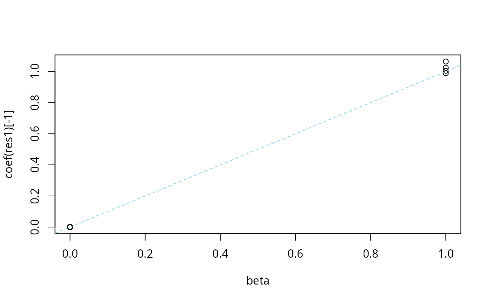

Performs a sparse Bayesian multiple linear regression
of y on X, using the "Sum of Single Effects" model from Wang et al
(2020). In brief, this function fits the regression model \(y =
\mu + X b + e\), where elements of \(e\) are i.i.d. normal
with zero mean and variance residual_variance, \(\mu\) is
an intercept term and \(b\) is a vector of length p representing
the effects to be estimated. The “susie assumption” is that
\(b = \sum_{l=1}^L b_l\) where each \(b_l\) is a vector of
length p with exactly one non-zero element. The prior on the
non-zero element is normal with zero mean and variance var(y)
* scaled_prior_variance. The value of L is fixed, and
should be chosen to provide a reasonable upper bound on the number
of non-zero effects to be detected. Typically, the hyperparameters
residual_variance and scaled_prior_variance will be
estimated during model fitting, although they can also be fixed as
specified by the user. See functions susie_get_cs and
other functions of form susie_get_* to extract the most
commonly-used results from a susie fit.
Usage
susie(
X,
y,
L = min(10, ncol(X)),
small = FALSE,
scaled_prior_variance = 0.2,
residual_variance = NULL,
prior_weights = NULL,
null_weight = 0,
standardize = TRUE,
intercept = TRUE,
estimate_residual_variance = TRUE,
estimate_prior_variance = TRUE,
estimate_prior_method = c("optim", "EM", "simple"),
check_null_threshold = 0,
prior_tol = 1e-09,
residual_variance_upperbound = Inf,
s_init = NULL,
coverage = 0.95,
min_abs_corr = 0.5,
compute_univariate_zscore = FALSE,
na.rm = FALSE,
max_iter = 100,
tol = 0.001,
tol_small = 1e-04,
verbose = FALSE,
track_fit = FALSE,
residual_variance_lowerbound = var(drop(y))/10000,
refine = FALSE,
n_purity = 100,
alpha0 = 0,
beta0 = 0
)
susie_suff_stat(
XtX,
Xty,
yty,
n,
X_colmeans = NA,
y_mean = NA,
maf = NULL,
maf_thresh = 0,
L = 10,
scaled_prior_variance = 0.2,
residual_variance = NULL,
estimate_residual_variance = TRUE,
estimate_prior_variance = TRUE,
estimate_prior_method = c("optim", "EM", "simple"),
check_null_threshold = 0,
prior_tol = 1e-09,
r_tol = 1e-08,
prior_weights = NULL,
null_weight = 0,
standardize = TRUE,
max_iter = 100,
s_init = NULL,
coverage = 0.95,
min_abs_corr = 0.5,
tol = 0.001,
verbose = FALSE,
track_fit = FALSE,
check_input = FALSE,
refine = FALSE,
check_prior = FALSE,
n_purity = 100,
...
)Arguments
- X
An n by p matrix of covariates.
- y
The observed responses, a vector of length n.
- L
Maximum number of non-zero effects in the susie regression model. If L is larger than the number of covariates, p, L is set to p.
- small
Logical. Useful when fitting susie on data with a limited sample size. If set to TRUE, susie is fitted using single-effect regression with the Servin and Stephens prior instead of the default Gaussian prior. This improves the calibration of credible sets. Default is FALSE.
- scaled_prior_variance
The prior variance, divided by
var(y)(or by(1/(n-1))ytyforsusie_suff_stat); that is, the prior variance of each non-zero element of b isvar(y) * scaled_prior_variance. The value provided should be either a scalar or a vector of lengthL. Ifestimate_prior_variance = TRUE, this provides initial estimates of the prior variances.- residual_variance
Variance of the residual. If
estimate_residual_variance = TRUE, this value provides the initial estimate of the residual variance. By default, it is set tovar(y)insusieand(1/(n-1))ytyinsusie_suff_stat.- prior_weights
A vector of length p, in which each entry gives the prior probability that corresponding column of X has a nonzero effect on the outcome, y.
- null_weight
Prior probability of no effect (a number between 0 and 1, and cannot be exactly 1).
- standardize
If
standardize = TRUE, standardize the columns of X to unit variance prior to fitting (or equivalently standardize XtX and Xty to have the same effect). Note thatscaled_prior_variancespecifies the prior on the coefficients of X after standardization (if it is performed). If you do not standardize, you may need to think more carefully about specifyingscaled_prior_variance. Whatever your choice, the coefficients returned bycoefare given forXon the original input scale. Any column ofXthat has zero variance is not standardized.- intercept
If
intercept = TRUE, the intercept is fitted; itintercept = FALSE, the intercept is set to zero. Settingintercept = FALSEis generally not recommended.- estimate_residual_variance
If
estimate_residual_variance = TRUE, the residual variance is estimated, usingresidual_varianceas an initial value. Ifestimate_residual_variance = FALSE, the residual variance is fixed to the value supplied byresidual_variance.- estimate_prior_variance
If
estimate_prior_variance = TRUE, the prior variance is estimated (this is a separate parameter for each of the L effects). If provided,scaled_prior_varianceis then used as an initial value for the optimization. Whenestimate_prior_variance = FALSE, the prior variance for each of the L effects is determined by the value supplied toscaled_prior_variance.- estimate_prior_method
The method used for estimating prior variance. When
estimate_prior_method = "simple"is used, the likelihood at the specified prior variance is compared to the likelihood at a variance of zero, and the setting with the larger likelihood is retained. The option "EM" is selected by default when setting small=TRUE, i.e., using SuSiE with Servin and Stephens SER- check_null_threshold
When the prior variance is estimated, compare the estimate with the null, and set the prior variance to zero unless the log-likelihood using the estimate is larger by this threshold amount. For example, if you set
check_null_threshold = 0.1, this will "nudge" the estimate towards zero when the difference in log-likelihoods is small. A note of caution that setting this to a value greater than zero may lead the IBSS fitting procedure to occasionally decrease the ELBO.- prior_tol
When the prior variance is estimated, compare the estimated value to
prior_tolat the end of the computation, and exclude a single effect from PIP computation if the estimated prior variance is smaller than this tolerance value.- residual_variance_upperbound
Upper limit on the estimated residual variance. It is only relevant when
estimate_residual_variance = TRUE.- s_init
A previous susie fit with which to initialize.
- coverage
A number between 0 and 1 specifying the “coverage” of the estimated confidence sets.
- min_abs_corr
Minimum absolute correlation allowed in a credible set. The default, 0.5, corresponds to a squared correlation of 0.25, which is a commonly used threshold for genotype data in genetic studies.
- compute_univariate_zscore
If
compute_univariate_zscore = TRUE, the univariate regression z-scores are outputted for each variable.- na.rm
Drop any missing values in y from both X and y.
- max_iter
Maximum number of IBSS iterations to perform.
- tol
A small, non-negative number specifying the convergence tolerance for the IBSS fitting procedure. The fitting procedure will halt when the difference in the variational lower bound, or “ELBO” (the objective function to be maximized), is less than
tol.- tol_small
used for small = TRUE only. Small, non-negative number specifying the convergence tolerance for the GIBSS fitting procedure. The fitting procedure will halt when the difference in the estimated posterior inclusion probability is less than
tol.- verbose
If
verbose = TRUE, the algorithm's progress, and a summary of the optimization settings, are printed to the console.- track_fit
If
track_fit = TRUE,traceis also returned containing detailed information about the estimates at each iteration of the IBSS fitting procedure.- residual_variance_lowerbound
Lower limit on the estimated residual variance. It is only relevant when
estimate_residual_variance = TRUE.- refine
If
refine = TRUE, then an additional iterative refinement procedure is used, after the IBSS algorithm, to check and escape from local optima (see details).- n_purity
Passed as argument
n_puritytosusie_get_cs.- alpha0
Numerical parameter for the NIG prior when using Servin and Stephens SER.
- beta0
Mumerical parameter for the NIG prior when using Servin and Stephens SER.
- XtX
A p by p matrix \(X'X\) in which the columns of X are centered to have mean zero.
- Xty
A p-vector \(X'y\) in which y and the columns of X are centered to have mean zero.
- yty
A scalar \(y'y\) in which y is centered to have mean zero.
- n
The sample size.
- X_colmeans
A p-vector of column means of
X. If bothX_colmeansandy_meanare provided, the intercept is estimated; otherwise, the intercept is NA.- y_mean
A scalar containing the mean of
y. If bothX_colmeansandy_meanare provided, the intercept is estimated; otherwise, the intercept is NA.- maf
Minor allele frequency; to be used along with
maf_threshto filter input summary statistics.- maf_thresh
Variants having a minor allele frequency smaller than this threshold are not used.
- r_tol
Tolerance level for eigenvalue check of positive semidefinite matrix of R.
- check_input
If
check_input = TRUE,susie_suff_statperforms additional checks onXtXandXty. The checks are: (1) check thatXtXis positive semidefinite; (2) check thatXtyis in the space spanned by the non-zero eigenvectors ofXtX.- check_prior
If
check_prior = TRUE, it checks if the estimated prior variance becomes unreasonably large (comparing with 10 * max(abs(z))^2).- ...
Additional arguments to provide backward compatibility with earlier versions of
susie_suff_stat.
Value
A "susie" object with some or all of the following
elements:
- alpha
An L by p matrix of posterior inclusion probabilites.
- mu
An L by p matrix of posterior means, conditional on inclusion.
- mu2
An L by p matrix of posterior second moments, conditional on inclusion.
- Xr
A vector of length n, equal to
X %*% colSums(alpha * mu).- lbf
log-Bayes Factor for each single effect.
- lbf_variable
log-Bayes Factor for each variable and single effect.
- intercept
Intercept (fixed or estimated).
- sigma2
Residual variance (fixed or estimated).
- V
Prior variance of the non-zero elements of b, equal to
scaled_prior_variance * var(y).- elbo
The value of the variational lower bound, or “ELBO” (objective function to be maximized), achieved at each iteration of the IBSS fitting procedure.
- cv_criterion
The value of the maximum difference between alpha value each iteration between, only returned when argument small set to TRUE
- fitted
Vector of length n containing the fitted values of the outcome.
- sets
Credible sets estimated from model fit; see
susie_get_csfor details.- pip
A vector of length p giving the (marginal) posterior inclusion probabilities for all p covariates.
- z
A vector of univariate z-scores.
- niter
Number of IBSS iterations that were performed.
- converged
TRUEorFALSEindicating whether the IBSS converged to a solution within the chosen tolerance level.
susie_suff_stat returns also outputs:
- XtXr
A p-vector of
t(X)times the fitted values,X %*% colSums(alpha*mu).
Details
The function susie implements the IBSS algorithm
from Wang et al (2020). The option refine = TRUE implements
an additional step to help reduce problems caused by convergence of
the IBSS algorithm to poor local optima (which is rare in our
experience, but can provide misleading results when it occurs). The
refinement step incurs additional computational expense that
increases with the number of CSs found in the initial run.
The function susie_suff_stat implements essentially the same
algorithms, but using sufficient statistics. (The statistics are
sufficient for the regression coefficients \(b\), but not for the
intercept \(\mu\); see below for how the intercept is treated.)
If the sufficient statistics are computed correctly then the
results from susie_suff_stat should be the same as (or very
similar to) susie, although runtimes will differ as
discussed below. The sufficient statistics are the sample
size n, and then the p by p matrix \(X'X\), the p-vector
\(X'y\), and the sum of squared y values \(y'y\), all computed
after centering the columns of \(X\) and the vector \(y\) to
have mean 0; these can be computed using compute_suff_stat.
The handling of the intercept term in susie_suff_stat needs
some additional explanation. Computing the summary data after
centering X and y effectively ensures that the
resulting posterior quantities for \(b\) allow for an intercept
in the model; however, the actual value of the intercept cannot be
estimated from these centered data. To estimate the intercept term
the user must also provide the column means of \(X\) and the mean
of \(y\) (X_colmeans and y_mean). If these are not
provided, they are treated as NA, which results in the
intercept being NA. If for some reason you prefer to have
the intercept be 0 instead of NA then set
X_colmeans = 0,y_mean = 0.
For completeness, we note that if susie_suff_stat is run on
\(X'X, X'y, y'y\) computed without centering \(X\) and
\(y\), and with X_colmeans = 0,y_mean = 0, this is
equivalent to susie applied to \(X, y\) with
intercept = FALSE (although results may differ due to
different initializations of residual_variance and
scaled_prior_variance). However, this usage is not
recommended for for most situations.
The computational complexity of susie is \(O(npL)\) per
iteration, whereas susie_suff_stat is \(O(p^2L)\) per
iteration (not including the cost of computing the sufficient
statistics, which is dominated by the \(O(np^2)\) cost of
computing \(X'X\)). Because of the cost of computing \(X'X\),
susie will usually be faster. However, if \(n >> p\),
and/or if \(X'X\) is already computed, then
susie_suff_stat may be faster.
References
G. Wang, A. Sarkar, P. Carbonetto and M. Stephens (2020). A simple new approach to variable selection in regression, with application to genetic fine-mapping. Journal of the Royal Statistical Society, Series B 82, 1273-1300 doi:10.1101/501114 .
Y. Zou, P. Carbonetto, G. Wang, G and M. Stephens (2022). Fine-mapping from summary data with the “Sum of Single Effects” model. PLoS Genetics 18, e1010299. doi:10.1371/journal.pgen.1010299 .
See also
susie_get_cs and other susie_get_*
functions for extracting results; susie_trendfilter for
applying the SuSiE model to non-parametric regression, particularly
changepoint problems, and susie_rss for applying the
SuSiE model when one only has access to limited summary statistics
related to \(X\) and \(y\) (typically in genetic applications).
Examples
# susie example
set.seed(1)
n = 1000
p = 1000
beta = rep(0,p)
beta[1:4] = 1
X = matrix(rnorm(n*p),nrow = n,ncol = p)
X = scale(X,center = TRUE,scale = TRUE)
y = drop(X %*% beta + rnorm(n))
res1 = susie(X,y,L = 10)
susie_get_cs(res1) # extract credible sets from fit
#> $cs
#> $cs$L1
#> [1] 1
#>
#> $cs$L2
#> [1] 2
#>
#> $cs$L3
#> [1] 3
#>
#> $cs$L4
#> [1] 4
#>
#>
#> $coverage
#> [1] 1 1 1 1
#>
#> $requested_coverage
#> [1] 0.95
#>
plot(beta,coef(res1)[-1])
abline(a = 0,b = 1,col = "skyblue",lty = "dashed")

plot(y,predict(res1))
abline(a = 0,b = 1,col = "skyblue",lty = "dashed")
 # susie_suff_stat example
input_ss = compute_suff_stat(X,y)
res2 = with(input_ss,
susie_suff_stat(XtX = XtX,Xty = Xty,yty = yty,n = n,
X_colmeans = X_colmeans,y_mean = y_mean,L = 10))
plot(coef(res1),coef(res2))
abline(a = 0,b = 1,col = "skyblue",lty = "dashed")
# susie_suff_stat example
input_ss = compute_suff_stat(X,y)
res2 = with(input_ss,
susie_suff_stat(XtX = XtX,Xty = Xty,yty = yty,n = n,
X_colmeans = X_colmeans,y_mean = y_mean,L = 10))
plot(coef(res1),coef(res2))
abline(a = 0,b = 1,col = "skyblue",lty = "dashed")